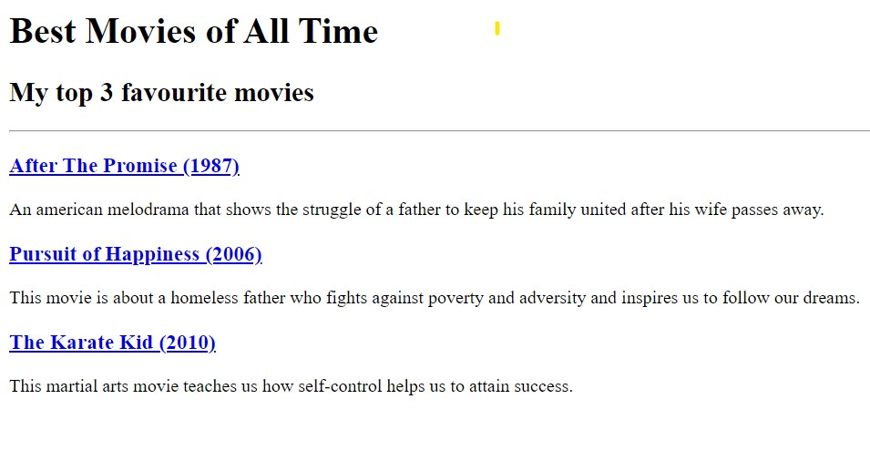
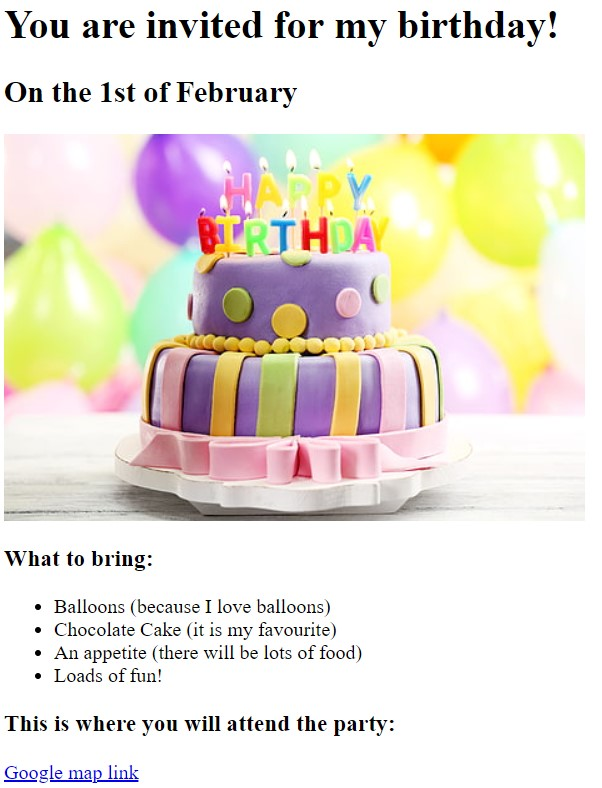

In this website, you can see all the projects that I have done so far in Web Development Bootcamp 2024 online course.
The following image gives you a preview of the Movie Ranking page:
The following image gives you a preview of the Birthday Invite page:
